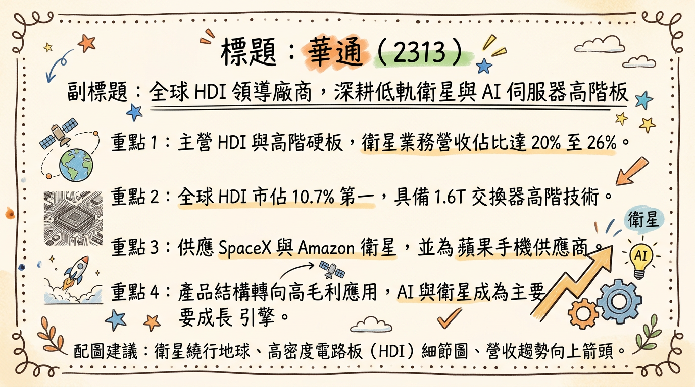
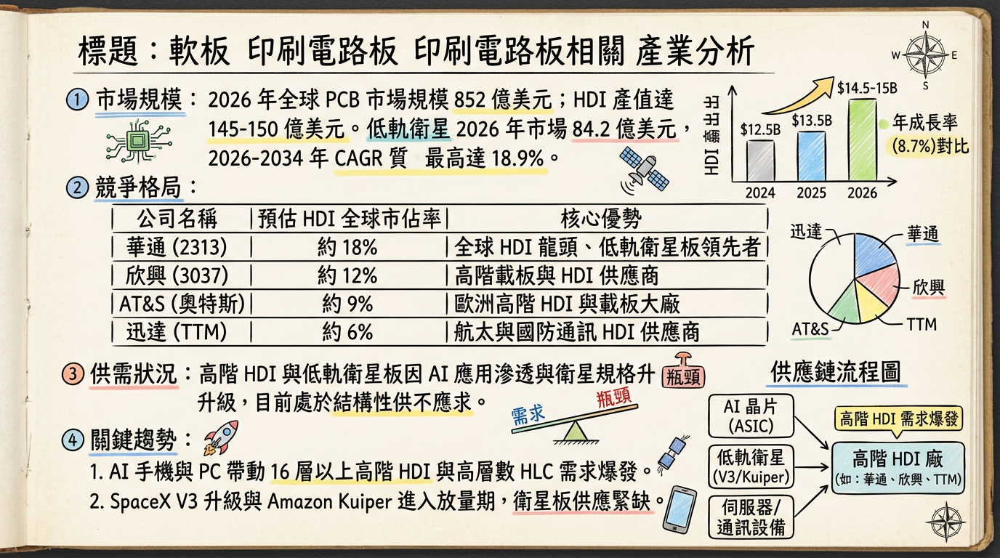
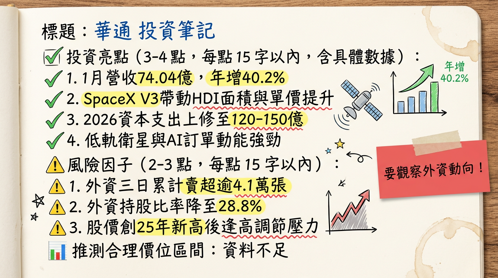

2313 華通 (Compeq) 深度研究報告
日期：2026-03-01 |
研究員：頂尖台股研究團隊
## 一句話摘要
從「蘋果供應鏈」質變為「太空與 AI 基礎設施」領航者，受惠 SpaceX V3 升級與 AI ASIC 需求倍增，2026 年進入獲利爆發期。
## 公司概覽
華通（Compeq）為全球 HDI（高密度連接板） 龍頭，2024 年市佔率約 10.7% 位居全球第一。公司正積極由傳統消費性電子轉型至高毛利之低軌衛星（LEO）與 AI 伺服器領域。
2025-2026 營收結構預估表格
| 業務板塊 | 營收佔比 (預估) | 主要產品/應用 | 成長動能 |
|---|
| 低軌衛星 (LEO) | 20% - 26% | SpaceX Starlink, Amazon Kuiper (天上/地面板) | 規格升級 (V3)、發射頻率增加 |
| 手機 (Mobile) | 16% - 18% | iPhone 主板、高階安卓手機 | 逐年下降，轉向高階 SLP |
| PC/筆電 | ~13% | MacBook、高階商務筆電 | 需求穩定，毛利適中 |
| AI 伺服器/網通 | 5% - 9% | ASIC 伺服器主板、OAM、800G/1.6T 交換器 | 2026 年預期營收倍增 |
| FPC/SMT/其他 | 22% - 40% | 軟板、穿戴裝置、AI 智慧眼鏡 (Meta/小米) | 新產品切入 (Meta 供應鏈) |
## 核心競爭優勢
低軌衛星絕對領導地位： 華通在衛星「天上板」市佔率高達 90%，是 SpaceX 與 Amazon 的核心夥伴，具備極高技術門檻與可靠度認證。
HDI 技術護城河： 隨著 AI 伺服器改採 ASIC 結構，帶動 16 層以上、高層數 HLC 需求，華通高階產能為全球少數能穩定大規模供貨的廠商。
非中產能佈局先鋒： 泰國廠二期將於 2026 年放量，滿足「China + 1」地緣政治需求，承接非陸系高階訂單。
## 財務分析
最近 6 個月月營收趨勢
| 月份 | 營收 (億元) | 月增率 (MoM) | 年增率 (YoY) | 狀態 |
|---|
| 2026/01 | 74.04 | +2.43% | +40.2% | 創近 4 個月新高 |
| 2025/12 | 72.28 | +7.13% | +13.09% | 表現優異 |
| 2025/11 | 67.47 | -4.18% | -0.8% | 淡季調整 |
| 2025/10 | 70.41 | -6.02% | +6.04% | 符合預期 |
| 2025/09 | 74.92 | +14.18% | +15.92% | 出貨高峰 |
| 2025/08 | 65.62 | +9.44% | -6.33% | ⚠️過時數據 |
年度獲利趨勢
| 年度 | 營收 (億元) | 毛利率 (預) | EPS (元) | 備註 |
|---|
| 2024 (實) | 724.64 | 15.8% | 4.70 | 基期年度 |
| 2025 (自) | 759.90 | 18.8% | 5.30 | 轉型起點 |
| 2026 (預) | 874 - 895 | 20% 以上 | 7.48 - 8.51 | 獲利爆發年 |
## 法說會重點 (2026/01/13)
- 低軌衛星： SpaceX V3 衛星板層數增至 20 層（四階 HDI），ASP（平均售價）顯著提升。2026 營收目標 185 億元（年增 22%）。
- AI 伺服器： 已打入 800G CPO 供應鏈與美系 CSP ASIC 訂單，預期 2026 相關營收將 翻倍成長。
- 資本支出： 由原 80-100 億 大幅上修至 120-150 億元，主要用於泰國二廠與台灣高階 AI 產線。
- 產能利用率： 2026 Q1 淡季不淡，衛星訂單能見度已達 2026 年底。
## 券商觀點
| 券商名稱 | 目標價 | 評等 | 日期 | 核心邏輯 |
|---|
| 富邦投顧 | 225 元 | 買進 (Buy) | 2026/01/27 | 2026 EPS 挑戰 7.82 元，看好衛星規格升級 |
| 統一投顧 | 210 元 | 買進 (Buy) | 2026/01/27 | AI 伺服器營收翻倍，獲利結構優化 |
| 國內大型法人 | 190 元 | 強力買進 | 2026/01/18 | 單月 EPS 表現優於預期 |
| FactSet 中位數 | 143 元 | 中立 | 2026/02/09 | ⚠️部分分析師尚未反映 1 月營收利多 |
## 財報深度分析
利潤率趨勢表格
| 期間 | 毛利率 | 營業利益率 | 稅後淨利率 | 關鍵驅動因子 |
|---|
| 2025 Q4 (估) | 18.8 - 19.5% | ~12.0% | ~9.5% | 衛星比重增加，消費性電子稀釋 |
| 2025 Q3 | 19.95% | 12.53% | 10.75% | 衛星天上板放量 |
| 2025 Q2 | 18.24% | 10.80% | 7.50% | 產品組合改善 |
| 2025 Q1 | 17.17% | 9.50% | 7.20% | 基期回溫 |
- 存貨分析： 2025 Q3 存貨週轉天數 58.41 天，處於健康區間（50-60 天）。
- 資本支出： 2026 年預計支出 150 億元，下半年折舊費用將增加，需觀察產能稼動率能否覆蓋成本。
## 股權異動
- 申報轉讓： 2025/12/15 經理人吳彭弘之子女申報轉讓 907 張，研判為資產規劃，不影響經營權。
- 股權流向： 2026 年 2 月下旬股價創高（225.5元），外資調節約 4.1 萬張，但 投信持續加碼護盤。
- 股利政策： 2025 年發放 2.4 元，預期 2026 年隨獲利成長，股利有望挑戰 3 - 3.5 元。
## 產業分析
競爭對手比較表格 (2025 預估數據)
| 公司名稱 | HDI 市佔率 | 2025 毛利率 (預) | 2026 預估 EPS | 核心優勢 |
|---|
| 華通 (2313) | ~11.0% | ~18.8% | 6.8 - 8.5 元 | 低軌衛星、ASIC Server |
| 臻鼎 (4958) | ~9.5% | ~17 - 19% | 12.0 元 | 規模全球第一、IC 載板 |
| 欣興 (3037) | ~8.2% | ~20 - 22% | 10.5 元 | ABF 載板、NV 體系主板 |
| 健鼎 (3044) | ~4.5% | ~26 - 28% | 24.5 元 | 獲利王、車用與伺服器 |
- 市場趨勢： 全球 HDI 產值於 2026 年預計達 150 億美元。高階 HDI（16 層以上）受 AI PC/手機帶動，持續供不應求。
## 近期催化劑
* SpaceX V3 衛星大規模發射。
* Amazon Kuiper 進入正式商用量產。
* AI 智慧眼鏡 (Meta) 訂單放量。
* 泰國一廠二期 2026 Q2 完工。
* 2026 下半年新增折舊費用壓力。
* 銅價居高不下影響成本。
* 台幣對美元強勢升值產生的匯損。
## ⭐ 成長動能時間軸
- 2025 Q4： 泰國一廠（硬板）產能達每月 40 萬呎，支撐地面站需求。
- 2026 Q1： AI 伺服器 ASIC 主板、OAM 加速卡開始規模化出貨。
- 2026 Q2： 台灣廠產能轉移完成，釋出 20-30 萬呎高階產能專供 AI 伺服器；泰國一廠二期（軟板）完工。
- 2026 Q4： 泰國廠產能翻倍（達每月 80 萬呎），二期高階太空板產能正式放量。
- 2027： 衛星與伺服器營收占比預期過半，獲利結構徹底質變。
## 2026 展望
成長動能：
衛星規格升級： 價量齊揚，天上板市佔穩固。
AI 轉型： 切入美系 CSP，避開傳統 GPU 板競爭，利潤較佳。
產能紅利： 泰國廠產能翻倍，滿足非中系訂單需求。
風險：
高額資本支出導致的折舊費用擠壓毛利。
衛星發射時程若受不可抗力延宕。
## 投資結論
評等：強力買進。 華通已不再是單純的蘋果概念股，而是「純度最高」的低軌衛星概念股。
獲利預估： 2026 年 EPS 有望站穩 7.5 元，挑戰 8.5 元，年增率高達 40-60%。
目標價區間： 建議參考法人評價，區間 210 - 230 元（基於 2026 EPS 及 25-28x PE）。
操作策略： 股價於 200 元以下具備長期投資價值，短線回測月線可分批佈局，主要觀察泰國廠產能開出進度與衛星發射頻率。
本報告由 AI 自動產生，資料來源為公開網路資訊，僅供參考，不構成投資建議。產生時間：2026-03-01 03:44
📊 資訊卡


